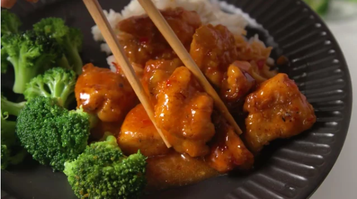
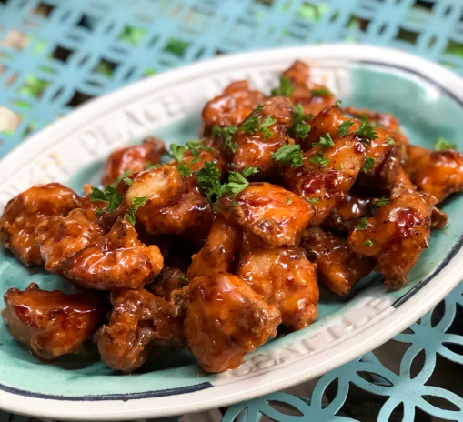

The Bang Bang Chicken

Discription
This bang bang chicken is a wonderful Americanized version of an extremely popular Sichuan Chinese
dish. With twice-fried chicken, you get the crispy fried breading you'd expect, and the bang bang sauce
drizzle makes the entire dish spectacular.
Ingredients
- ⅓ cup milk
- 1 large egg
- 1 pound boneless, skinless chicken breasts, cut into 1-inch cubes
- ¼ cup potato starch
- ¼ cup all-purpose flour
- ½ teaspoon salt
- ¼ teaspoon ground black pepper
- ¼ teaspoon shichimi togarashi (Japanese red pepper condiment)
- 2 cups oil for frying, or as needed
- ¼ cup mayonnaise
- 2 tablespoons honey
- 2 tablespoons sweet chili sauce
- 1 teaspoon gochujang (Korean hot pepper paste)
How To Prepare The Bang Bang Chicken
Step 1
-
Whisk together milk and egg in a large bowl until well combined. Add chicken; stir to coat and allow to
marinate for 15 minutes. Drain and discard egg mixture.
Step 2
-
Combine potato starch, flour, salt, pepper, and shichimi in a medium bowl. Pour into a large plastic
resealable bag. Add chicken; seal the bag and shake until chicken is well coated.
Step 3
-
Heat 2 inches oil in a deep saucepan over medium heat to 325 degrees F (165 degrees C).
Step 4
-
Working in batches of about 5 to 8 pieces at a time, cook chicken in hot oil for about 90 seconds. Remove
to a paper towel-lined plate; keep each batch separate.
Step 5
-
Increase oil temperature to 350 degrees F (175 degrees C). The oil should be continuously boiling at this
point. Carefully re-add the first batch of chicken and fry for another 90 seconds. Remove to another paper
towel-lined plate. Repeat with remaining batches of chicken.
Final Step
-
Mix together mayonnaise, honey, sweet chili sauce, and gochujang in a large serving bowl until combined.
Toss fried chicken with sauce to coat.
